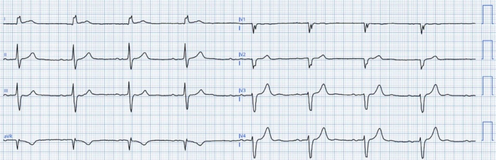
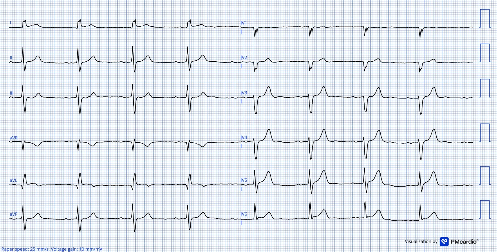
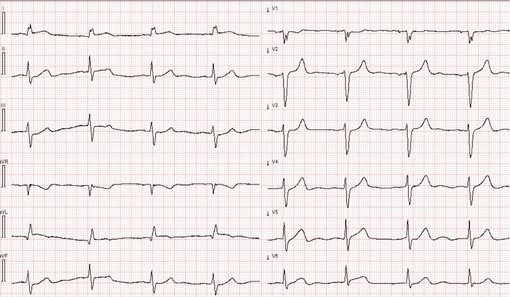
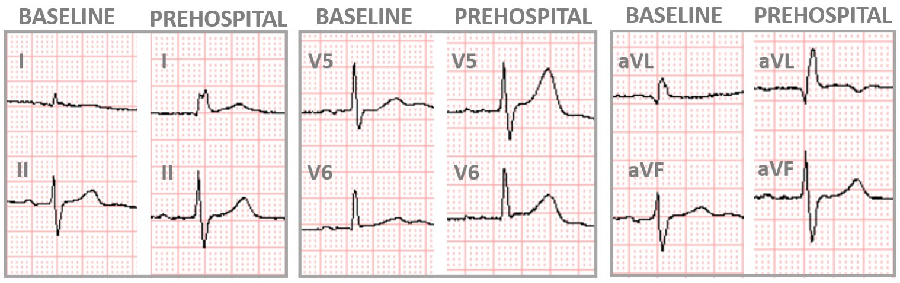
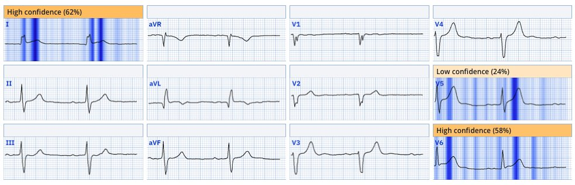
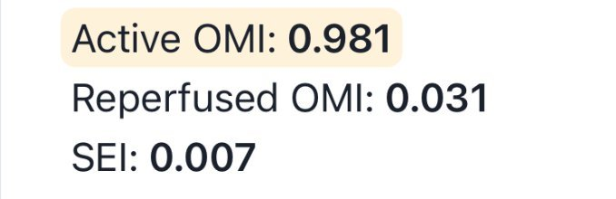
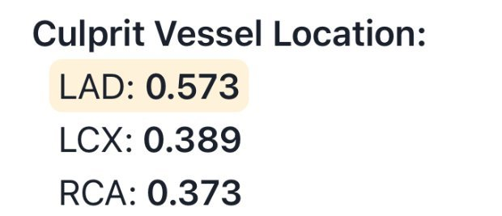
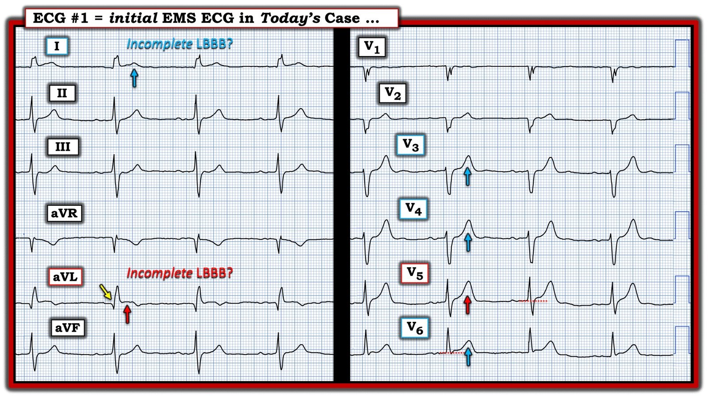
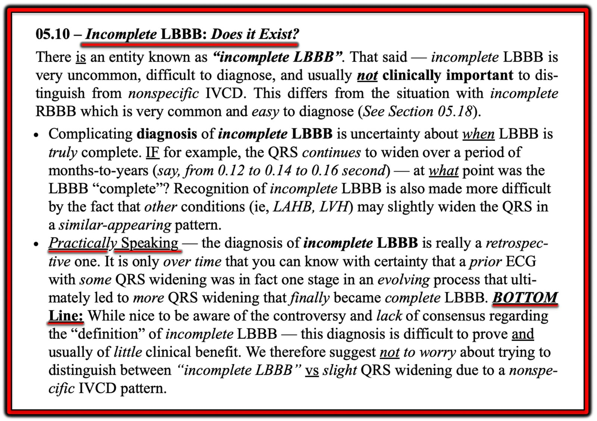
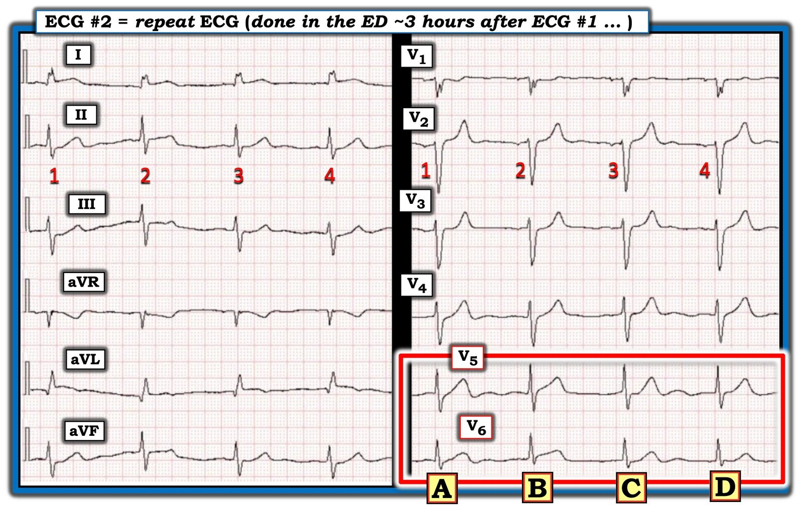

30/07/2025 — Bệnh nhân 87 tuổi đau ngực
Bản dịch tiếng Việt của bài "87-year-old with chest pain" – Dr. Smith’s ECG Blog. Giữ nguyên toàn bộ 9 hình ảnh của bản gốc.


Tác giả: Magnus Nossen.
Điện tâm đồ trước viện này được ghi ở một bệnh nhân nam cao tuổi mới khởi phát đau ngực. Đau sau xương ức, mức độ 7/10, tính chất bóp nghẹt và lan lên cổ. Tiền sử đáng chú ý gồm đái tháo đường típ II điều trị bằng insulin, huyết khối tĩnh mạch sâu (DVT) và phẫu thuật ổ bụng. Bạn đánh giá điện tâm đồ này thế nào?
Điện tâm đồ trước viện (điện tâm đồ #1)


DIỄN GIẢI: Điện tâm đồ cho thấy nhịp xoang, tần số tim khoảng 50 lần/phút. Thời gian QRS là 110 ms; hình dạng QRS ở chuyển đạo I, cùng với việc không có sóng R đáng kể ở V1-V2, phù hợp với blốc nhánh trái không hoàn toàn. Có điểm J chênh lên tối thiểu ở các chuyển đạo trước bên và bên cao. Sóng T ở các chuyển đạo V3-V6 rõ ràng là tối cấp, với thay đổi sóng T nổi bật nhất ở chuyển đạo V5. Những thay đổi điện tâm đồ tinh tế này đã không được nhân viên y tế nhận ra hay bình luận.
Bệnh nhân đến khoa cấp cứu (ED) trong tình trạng vẫn còn đau ngực, không đáp ứng với morphin và nitroglycerin. Troponin I độ nhạy cao (hs-troponin) ban đầu tăng nhẹ, 35 ng/L (tham chiếu <34 ng/L). Troponin I lấy lại 3 giờ sau cho thấy tăng mạnh lên 592 ng/L. Điện tâm đồ tiếp theo được ghi sau kết quả troponin thứ hai này, tuy không rõ lúc đó bệnh nhân còn đau ngực hay không.
Điện tâm đồ ghi lại tại ED (điện tâm đồ #2)


Điện tâm đồ này có một ít trôi đường nền, nhưng về cơ bản cho thấy cùng những dấu hiệu như bản ghi đầu tiên, gợi ý mạnh rằng bệnh nhân nhiều khả năng vẫn còn triệu chứng tại thời điểm ghi điện tâm đồ này. Không có dấu hiệu tái tưới máu rõ ràng.
Dù troponin tăng dần (và có lẽ vẫn còn đau ngực), bệnh nhân không được đưa vào phòng thông tim (cath lab) — mà được nhập viện. Troponin I tăng lên 23,076 ng/L qua đêm, và tăng tiếp lên 35,906 ng/L vào buổi sáng. Cả hai điện tâm đồ trong ca này, mỗi bản tự nó, đều đáp ứng tiêu chuẩn chẩn đoán nhồi máu cơ tim do tắc (OMI). Ngoài ra, so sánh với một điện tâm đồ nền trước đây sẵn có của bệnh nhân càng làm các thay đổi rõ ràng hơn.
Trong hình dưới đây, một số chuyển đạo chọn lọc của điện tâm đồ trước viện được so sánh với điện tâm đồ nền. Sự thay đổi so với trước chỉ có thể do thiếu máu cục bộ gây ra.


Hãy chú ý sóng T đồng hướng ở chuyển đạo I, và các sóng T tối cấp ở chuyển đạo V5 và V6 trên điện tâm đồ trước viện khi so với điện tâm đồ nền.
Queen of Hearts đã không được dùng trong xử trí bệnh nhân ở ca này. Nếu mô hình AI này được sử dụng, cô ấy hẳn đã nhận ra nhồi máu cơ tim do tắc. Xem hình dưới đây để thấy kết quả đọc của QoH kèm bản đồ giải thích (explainability map) cho điện tâm đồ đầu tiên của ca hôm nay.
QoH kèm khả năng giải thích cho điện tâm đồ #1


Ứng dụng PMcardio for Individuals 3.0 mới nay đã có mô hình Queen of Hearts mới nhất và khả năng giải thích của AI (bản đồ nhiệt màu xanh)! Tải ngay cho iOS hoặc Android. https://www.powerfulmedical.com/pmcardio-individuals/
Như bạn thấy, mô hình AI làm nổi bật đoạn ST lồi đồng hướng tinh tế ở chuyển đạo I — cũng như các sóng T tối cấp, nổi bật ở các chuyển đạo trước tim phía bên. Ngoài ra, đoạn ST ở chuyển đạo III đẳng điện một cách bất thường — trong khi thông thường ta sẽ chờ đợi ST chênh lên nhẹ do có sóng S sâu. Điều này có lẽ được mô hình AI nhận ra, nhưng không đạt tiêu chuẩn để được thể hiện trên bản đồ giải thích. Gộp lại, các đặc điểm này có giá trị chẩn đoán nhồi máu cơ tim do tắc (OMI).
Bạn có thể chắc chắn đến mức nào rằng điện tâm đồ này là OMI?
Tôi được đồng nghiệp, BS. Vinje, gửi điện tâm đồ này mà không kèm thông tin lâm sàng. Câu trả lời của tôi là “OMI cho đến khi chứng minh được điều ngược lại”. Đó cũng là nhận định của anh ấy. Khi được luyện tập — các dấu hiệu OMI có thể được nhận ra. Bạn có thể chắc chắn đến mức nào rằng bệnh nhân này đang bị tắc một động mạch vành? Tôi thấy khá tự tin.
Mô hình AI Queen of Hearts phân loại điện tâm đồ này là tương đương STEMI (OMI). Như trong hình dưới đây, mô hình cho ra giá trị 0.981 đối với OMI đang diễn ra, rất gần điểm tối đa 1.0. Theo BS. Meyers, dựa trên dữ liệu huấn luyện — mức này tương ứng với độ đặc hiệu khoảng 99-99,5%
Kết quả đọc của Queen đối với điện tâm đồ #1
(Mô hình này chưa được cung cấp cho công chúng)


Mô hình AI rất chắc chắn rằng điện tâm đồ này thể hiện tắc động mạch vành cấp, cho điểm rất gần 1.0 (điểm tối đa). Không có đặc điểm nào gợi ý tái tưới máu, thể hiện qua điểm rất thấp ở nhóm ‘OMI đã tái tưới máu’ (Reperfused OMI). Ngoài ra, điểm cho thiếu máu cục bộ dưới nội tâm mạc (SEI) còn thấp hơn nữa, càng ủng hộ chẩn đoán thiếu máu cục bộ xuyên thành đang diễn ra.
Dưới đây là ước tính của QoH về mạch thủ phạm. Như bạn thấy, mô hình AI chỉ ra LAD là mạch có khả năng liên quan cao nhất (còn RCA là động mạch thủ phạm ít khả năng nhất).


BÀN LUẬN
Người đàn ông 87 tuổi này cuối cùng được chuyển đi chụp mạch vành. Trong thủ thuật, phát hiện tắc 100% nhánh chéo thứ nhất (D1) và đã đặt stent thành công. Các động mạch vành còn lại chỉ có xơ vữa nhẹ, không có tổn thương gây hẹp đáng kể nào. Chụp mạch được thực hiện hơn 24 giờ sau khởi phát triệu chứng. Mở thông một động mạch vành đã tắc hoàn toàn hơn 24 giờ mang lại rất ít, nếu có, lợi ích về tiên lượng.
Nhánh chéo thứ nhất cấp máu cho thành trước bên của thất trái. Vùng trước bên do D1 cấp máu này nằm “giữa” các vùng do LAD và động mạch mũ cấp máu, điều này phản ánh trong dự đoán động mạch thủ phạm có khả năng của AI — LAD trước, rồi đến LCx.
Những điểm cần học
- Smith: Khi đã có một điện tâm đồ có giá trị chẩn đoán, ĐỪNG CHỜ TROPONIN. CƠ TIM ĐANG CHẾT!! HÃY DÙNG QUEEN OF HEARTS!
- Smith: xác suất tiền nghiệm của bệnh nhân này (đau ngực bóp nghẹt mới xuất hiện ở người 87 tuổi?!) cao đến mức bạn nên kích hoạt phòng thông tim bất kể điện tâm đồ cho thấy gì
- Bệnh nhân có troponin tăng dần và đau ngực kháng trị kéo dài cần được đưa vào phòng thông tim vì OMI sẽ là chẩn đoán có khả năng nhất.
- Nên so sánh với điện tâm đồ nền khi có sẵn.
- Những thay đổi điện tâm đồ “tinh tế” thường có giá trị chẩn đoán. Ngay cả với những thay đổi nhỏ như ở ca hôm nay, Queen of Hearts vẫn nhận ra OMI đang diễn ra với độ đặc hiệu cao ấn tượng.
======================================
BÌNH LUẬN CỦA TÔI, bởi KEN GRAUER, MD (30/7/2025):
Ca hôm nay của BS. Nossen là một người đàn ông lớn tuổi đến khám vì ĐN mới khởi phát (Đau Ngực) dữ dội. Đáng tiếc — một loạt bất thường điện tâm đồ tinh tế nhưng cấp tính đã không được nhân viên y tế nhận ra, cả trên điện tâm đồ EMS đầu tiên — lẫn trên điện tâm đồ ghi lại khoảng ~3 giờ sau tại ED.
- Tôi tập trung Bình luận của tôi vào một số dấu hiệu điện tâm đồ quan trọng đã bị bỏ sót trên cả hai bản ghi.
==================================
Vì sao điện tâm đồ EMS đầu tiên có giá trị chẩn đoán OMI cấp?
Điểm MẤU CHỐT: Bệnh sử trong ca hôm nay không thể bị bỏ qua: Bệnh nhân là một người đàn ông cao tuổi có các yếu tố nguy cơ, đã gọi EMS vì “đau ngực sau xương ức kiểu bóp nghẹt, lan lên cổ — với mức độ nặng 7/10″. Bệnh sử này tự động xếp bệnh nhân hôm nay vào nhóm nguy cơ cao hơn bị một biến cố tim cấp (nghĩa là mọi dấu hiệu điện tâm đồ có khả năng cấp tính đều nên được chấp nhận là biểu hiện của OMI cấp cho đến khi chứng minh được điều ngược lại).
- Nhịp trong Hình 1 là nhịp chậm xoang — với QRS giãn rộng nhẹ đến 0.11 giây. Hình dạng QRS ở chuyển đạo I trông giống LBBB (blốc nhánh trái) — ngoại trừ việc phức bộ QRS không đủ rộng để đạt tiêu chuẩn của rối loạn dẫn truyền này (tức là, LBBB hoàn toàn phải có thời gian QRS ít nhất 0.12 giây).
- Dù điện tâm đồ hôm nay có đạt tiêu chuẩn LBBB “không hoàn toàn” hay không — hay nên gọi đúng hơn là IVCD không đặc hiệu (chậm dẫn truyền trong thất) — “mắt” tôi ngay lập tức bị hút về chuyển đạo aVL vì ST chênh lên dạng vòm kèm sóng T đảo ngược ở phần cuối ở chuyển đạo này. Ngoài ra — sóng Q khởi đầu ở chuyển đạo aVL rõ ràng quá rộng để là một sóng q vách bình thường (và nếu rối loạn dẫn truyền này đúng là LBBB không hoàn toàn — thì lẽ ra không được thấy sóng Q nào ở các chuyển đạo bên!).
- ĐIỀU CỐT LÕI: Ngay cả khi không có gì khác đáng chú ý trên điện tâm đồ #1 — ở người đàn ông lớn tuổi đau ngực dữ dội, bóp nghẹt này — tôi đã biết rằng điện tâm đồ EMS đầu tiên này phải được coi là biểu hiện của OMI cấp cho đến khi chứng minh được điều ngược lại.
Nhưng trên điện tâm đồ #1 còn nhiều dấu hiệu khác nữa:
- Dù sóng R dương, giãn rộng ở chuyển đạo I là do LBBB không hoàn toàn hay IVCD không đặc hiệu — thì sóng ST-T ở các chuyển đạo bên trái có QRS giãn rộng giống dẫn truyền kiểu LBBB phải hướng ngược chiều (tức là âm) với sóng R dương. Thay vào đó, sóng T dương ở chuyển đạo I (mũi tên XANH ở chuyển đạo này) mang ý nghĩa lâm sàng tương tự như ST chênh lên dạng vòm ở chuyển đạo bên cao còn lại ( = chuyển đạo aVL).
- Việc các thay đổi ST-T cấp ở chuyển đạo bên cao I và aVL là “thật” — được củng cố bởi đoạn ST thẳng đuỗn bất thường ở 2 trong số các chuyển đạo dưới ( = chuyển đạo III và aVF).
- Các bất thường rõ hơn thấy ở các chuyển đạo trước tim. Như BS. Nossen đã nêu — bất thường nhất trong các sóng T tối cấp là ở chuyển đạo V5 (mũi tên ĐỎ ở V5), nơi ngoài ST chênh lên tinh tế, sóng T rõ ràng “đồ sộ” không tương xứng so với biên độ khiêm tốn của sóng R ở chuyển đạo này.
- Theo nguyên tắc chuyển đạo lân cận — các mũi tên xanh ở chuyển đạo V3,V4 và V6 đều cao hơn, “béo hơn ở đỉnh, và rộng hơn ở chân so với mong đợi (tức là tối cấp) khi xét biên độ QRS khiêm tốn ở các chuyển đạo này.
- Điểm MẤU CHỐT: Phải thừa nhận rằng các dấu hiệu ST-T mô tả ở trên tại chuyển đạo I, III và aVF là tinh tế. Nhưng ST chênh lên dạng vòm bất thường kèm sóng T đảo ngược phần cuối ở chuyển đạo aVL — cùng các sóng T tối cấp ở chuyển đạo V5, và mở rộng ra (các chuyển đạo lân cận) ở V3,V4 và V6 ở bệnh nhân đau ngực bóp nghẹt, dữ dội, mới khởi phát này phải được coi là biểu hiện của OMI cấp cho đến khi chứng minh được điều ngược lại.
Hình 1: Tôi đã đánh dấu điện tâm đồ EMS đầu tiên.


==================================
LBBB không hoàn toàn là gì?
Vượt ra ngoài phần cốt lõi — Tôi đã nghiên cứu khái niệm LBBB không hoàn toàn trong nhiều thập kỷ. Trong khi RBBB không hoàn toàn là một thực thể phổ biến và được định nghĩa rõ — LBBB không hoàn toàn là một thực thể hiếm gặp, mơ hồ vì những lý do tôi điểm lại dưới đây trong Hình 2.
- Ý nghĩa của việc chúng ta cân nhắc LBBB không hoàn toàn là nguyên nhân gây giãn rộng QRS trên điện tâm đồ #1 — là ở chỗ, giống như LBBB hoàn toàn (trong đó trình tự khử cực thất bị thay đổi do rối loạn dẫn truyền này) — vectơ tái cực thất ở cả LBBB hoàn toàn lẫn không hoàn toàn phải hướng ngược chiều với sóng QRS cuối cùng ở một số chuyển đạo (mà ở các chuyển đạo bên như chuyển đạo I — chính là sóng R dương). Chính vì lý do này mà sóng T dương ở chuyển đạo I của điện tâm đồ #1 là một thay đổi ST-T nguyên phát, mà ở bệnh nhân đau ngực dữ dội mới xuất hiện cần được diễn giải là một thay đổi điện tâm đồ do thiếu máu cục bộ cấp.
- T.B. (P.S.): Đây là một khái niệm nâng cao … (và vì sóng ST-T ở các chuyển đạo aVL và V3-đến-V6 rõ ràng bất thường trên điện tâm đồ #1 — chẩn đoán OMI cấp nên được đưa ra trên điện tâm đồ #1 bất kể bạn diễn giải sóng ST-T ở chuyển đạo I như thế nào).
Hình 2: LBBB không hoàn toàn có tồn tại không? (Hình trích từ Grauer K — ECG Pocket Brain-EPub; KG/EKG Press, 2014).


Dùng morphin không phù hợp:
Như chúng tôi thường nhấn mạnh trên Dr. Smith’s ECG Blog — Không nên dùng morphin khi đang cân nhắc chẩn đoán OMI cấp cho đến khi đã quyết định thông tim ngay. Lý do của lời cảnh báo này là việc giảm triệu chứng bằng morphin có thể làm chậm thêm quyết định thông tim kèm PCI cần thiết.
- Đáng tiếc trong ca hôm nay — Morphin đã không làm giảm được đau ngực của bệnh nhân (tự điều này, ngay cả khi không có thay đổi điện tâm đồ — đã là chỉ định thông tim ngay khi xét bệnh sử đáng lo ngại của bệnh nhân — chưa kể đến các giá trị Troponin tăng dần).
==================================
Điện tâm đồ #2 cho thấy gì?
Lý do tôi đặt câu hỏi Điện tâm đồ #2 cho thấy gì? — Là vì tôi không chắc chắn từ bản ghi trong Hình 3 câu trả lời cho câu hỏi này là gì.
- Điện tâm đồ #2 (mà tôi đã đưa lại trong Hình 3) — chỉ gồm vỏn vẹn 4 nhát (tức là, cùng 4 nhát đó được thấy ở cả 12 chuyển đạo). Nhận thức rằng chỉ có 4 nhát được đánh giá trên bản ghi này là quan trọng — vì chúng ta phải hỏi trong 4 phức bộ mà tôi đánh dấu “A”, “B”, “C” và “D”, phức bộ nào là phức bộ thật?
- Hãy tập trung vào hình dạng sóng ST-T ở chuyển đạo V5 và V6 (trong hình chữ nhật ĐỎ). Chẳng phải hình dạng sóng ST-T thay đổi theo từng phức bộ QRS ở cả hai chuyển đạo này sao?
- Ví dụ — NẾU phức bộ “B” thể hiện hình dạng sóng ST-T “thật” ở V5,V6 của điện tâm đồ #2 — thì ta sẽ phải diễn giải đây là một thay đổi ST động so với sóng ST-T ở V5,V6 của điện tâm đồ #1, vốn trông không cấp tính bằng.
- Mặt khác — sóng ST-T ở “C” và “D” của V5,V6 trên điện tâm đồ #2 trông ít cấp tính hơn nhiều.
- Bài học cần rút ra: Khi quyết định có (và nếu có thì khi nào) thông tim hay không còn đang cân nhắc — nếu các vấn đề kỹ thuật như biến dạng do nhiễu gây bối rối về hình dạng sóng ST-T “thật” — Hãy ghi lại điện tâm đồ! (Đừng chờ hàng giờ — như đã xảy ra ở ca này — mà thay vào đó, chỉ cần ghi lại điện tâm đồ, cố gắng hết mức có thể để giảm thiểu biến dạng do nhiễu trên bản ghi lặp lại.
Hình 3: Tôi đã đánh dấu điện tâm đồ ghi lại (thực hiện tại ED — khoảng 3 giờ sau khi ghi điện tâm đồ #1).

